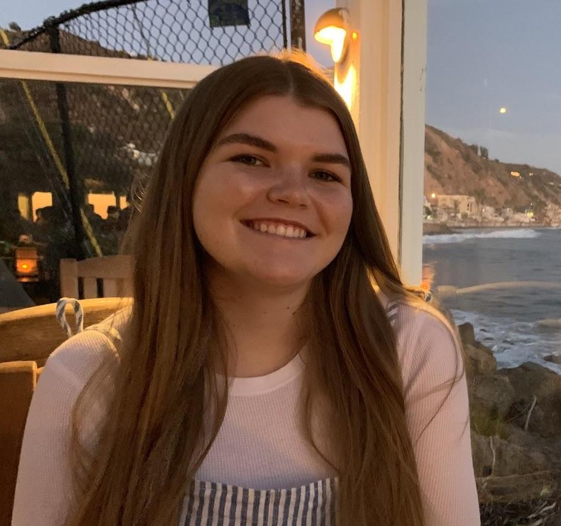
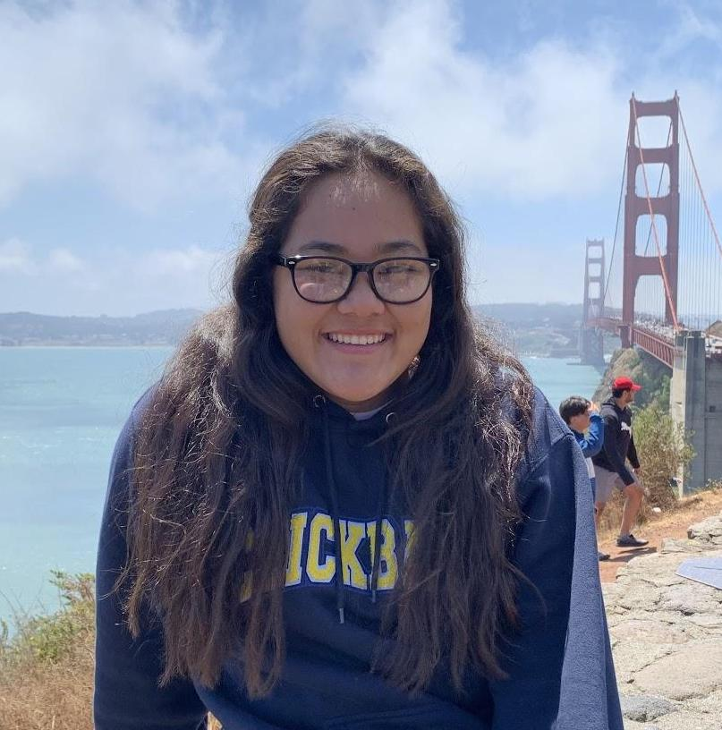
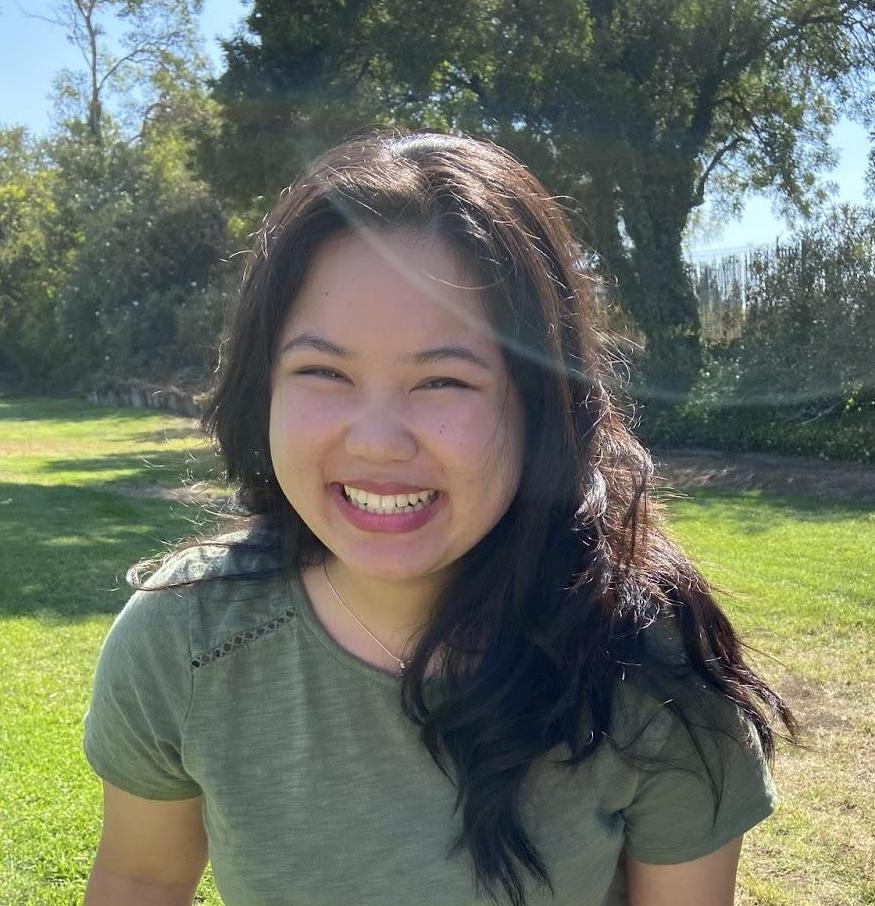

WHO WE ARE
The Haven Project is a club originally designed at Notre Dame High School by Erin Miller and Izzie Ramirez in 2019 with a goal to create a safe space for children in foster care. It began with 10 members and has since then grown to become not only a club with over 100 members, but also has grown to have a branch at UC Davis as well. As a club we strive to not only provide resources for children going through this process but also educate ourselves and peers on a topic that is so often overlooked. As a club we have been able to do many projects from Boxes of Love (quarantine care packages), to creating a Buddy the Bear mascot as a friend to children who may feel lonely, to launching our merchandise, spreading awareness to donors nationwide. Even with the difficulties of COVID and pivoting to online meetings and projects, we have been able to support over 40 children in the Los Angeles area. We are thrilled to continue our outreach as the Haven Project expands and we are able to provide love and support for children all over the world.

Erin is a senior at Notre Dame High School and is planning to major in Music Business. She started this club inspired by some of her closest friends and family member’s stories through the foster and adoption process. She is thrilled at how far the Haven Project has come since the beginning and she cannot wait to see it flourish and grow.

Izzie is currently a senior at Notre Dame High school and will be attending college next year to pursue a major in biology. Both she and Erin were thrilled to start this club their junior year after being inspired by listening to stories of her mother’s adoption process. She is very excited to take the Haven Project with her next year to the college she chooses and is thrilled to continue outreach.

Kaysa is a second year at UCD, majoring in Biological Sciences and pursuing a minor in studio art and GDB. She learned about The Haven Project through Izzie and Erin, and was inspired by close friends' experiences to start the first THP branch at UCD. She is very grateful to be a part of this organization and meet all the wonderful people who are just overflowing with eagerness to support their friends and youths in their community.